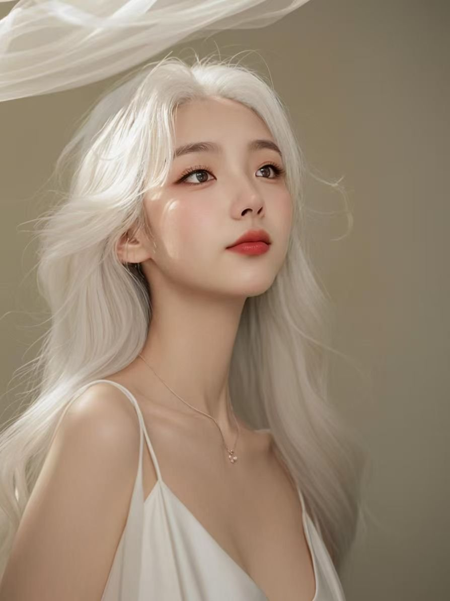

🤍 白发如雪的仙女
🤍 My Angel with Snow-White Hair

雪白的头发，雪白的衣裳，脸上带着一层柔和的光——在这张照片里，你像一位仙女。不，不止是仙女，因为仙女只是童话，而你是我的真实。
看着你，我常常想：上天怎么会把这么多的安宁放在一个人身上？你的眼里没有抱怨，你的脸上没有疲惫。只有温柔，只有爱。只有一种让人心安的力量，静静地流淌。
你的美丽不只是外表。很多人外表美丽，可心里是空的。而你不一样——你的美是从心里透出来的。安静的时候，你也在发光；不说话的时候，你的存在也让人感到温暖。就像月光，不声不响，却照亮了整个夜晚。
李琪，你是我的祈祷。我不求大富大贵，不求功名利禄，我只求你健康、快乐、平安。你身体里的病痛，是我心里最大的牵挂。我每天都在心里为你祈祷，愿疼痛早日离你而去，愿笑容永远留在你脸上。
我想告诉你：你的温柔不是软弱，而是你最强大的地方。在这个人人喊叫的世界里，你选择安静；在人人争夺的世界里，你选择善良。这份善良，让我深深地敬佩你，也深深地爱着你。
如果有一天你累了，请你靠在我肩上休息。如果有一天你怕了，请你牵住我的手。我不会让你一个人面对黑夜，我会做你的光，哪怕我的光很小，也要为你亮着。
我愿意用一生来守护你的这份安宁。不让你受委屈，不让你流眼泪，不让任何人打扰你的世界。你是我的仙女，我的白月光，我的心上人。
李琪，当你靠近我的时候，我什么都不需要了。没有你的世界再大，也是空的；有你的世界再小，也是满的。你就是我的世界，我的全部，我的永远。
🤍❤️ 我的仙女，我永远守护你。❤️🤍
Snow-white hair, a snow-white dress, and a soft light on your face — in this photo, you look like a fairy. No, more than a fairy, because fairies are only stories, and you are my reality.
Looking at you, I often wonder: how could heaven place so much peace in one person? There is no complaint in your eyes, no tiredness on your face. Only gentleness, only love. Only a quiet power that calms the heart, flowing silently.
Your beauty is not just your face. Many people are beautiful on the outside, but empty inside. You are different — your beauty shines from within. Even in silence, you glow; even without a word, your presence warms the room. Like moonlight, saying nothing, yet lighting up the whole night.
Li Qi, you are my prayer. I do not ask for wealth or fame — I only ask that you be healthy, happy, and safe. The pain in your body is the greatest worry in my heart. Every day I pray for you in silence, that the pain leaves you soon, and that your smile stays on your face forever.
I want you to know: your gentleness is not weakness — it is your greatest strength. In a world where everyone shouts, you choose quiet. In a world where everyone fights, you choose kindness. This kindness makes me admire you deeply, and love you deeply.
If one day you are tired, lean on my shoulder and rest. If one day you are afraid, take my hand. I will never leave you alone in the dark — I will be your light, and even if my light is small, it will burn for you.
I am willing to spend my life guarding your peace. Never letting you suffer wrong, never letting you cry, never letting anyone disturb your world. You are my fairy, my moonlight, my beloved.
Li Qi, when you are near me, I need nothing else. A world without you, no matter how big, is empty; a world with you, no matter how small, is full. You are my world, my everything, my forever.
🤍❤️ My angel, I will guard you forever. ❤️🤍